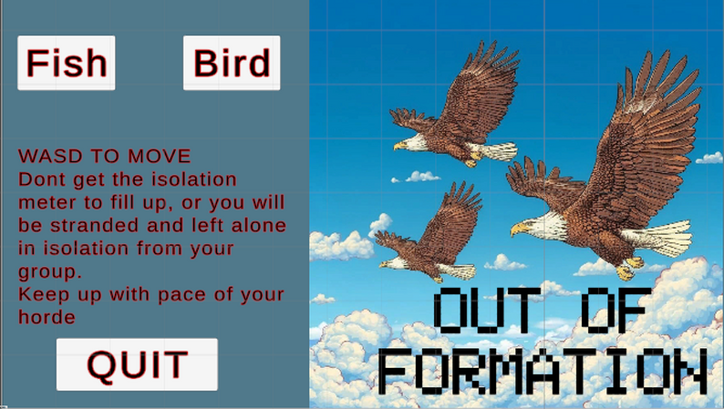
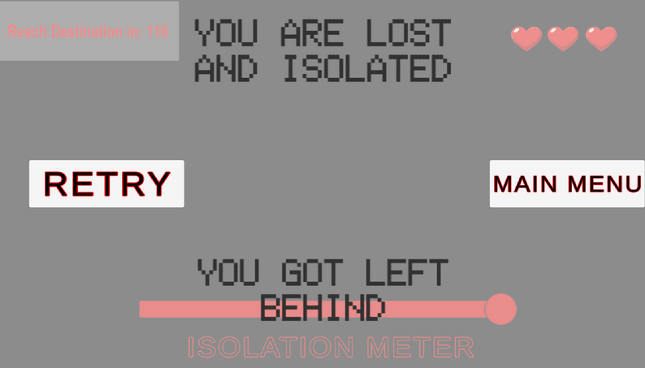
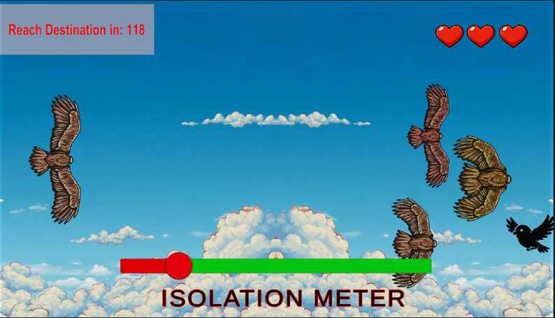

Out of Formation
Micro Jam 053 prototype. A keyboard-only isolation game about staying with a migrating group.
Category: Game Jams and Experiments | Role: Programmer | GitHub
About the Jam
Out of Formation was created for Micro Jam 053, a 48-hour online jam with the theme Isolation and a keyboard-only input requirement. The project was developed with one classmate, with my role focused on programming.
The player controls an animal that constantly moves forward and must stay close to its migrating group. Obstacles can break the formation, and an isolation meter fills when the player falls too far away from the group. If the meter reaches the limit, the player loses.
My Contribution
- Implemented the main gameplay systems and connected them into a complete playable loop.
- Built camera logic that follows the migrating group and forces the player to keep up.
- Created the isolation system based on distance from the group.
- Connected the isolation meter to screen dimming and the final lose state.
- Set up the UI, menu flow, and obstacle behaviour for two animal sections.
- Used Bezi AI to support the sound manager and sound triggers required for the jam prize pool.
Technical Notes
- Kept the scope small by focusing on one readable loop and one clear fail condition.
- Cut the planned mammal section because the 48-hour limit made the extra section unrealistic.
- Identified bird collision problems caused by an oversized collider registering wing movement as obstacle hits.
- The remaining issue was that the menu still used mouse-click navigation, which did not fully match the keyboard-only requirement.


